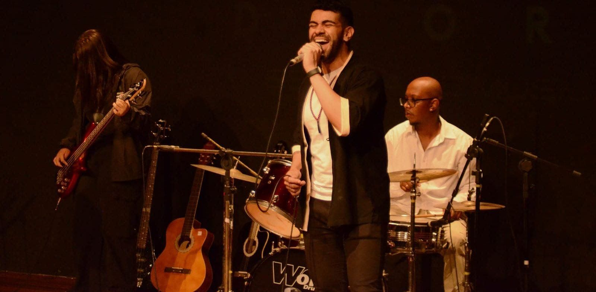

Cordas
Violão, guitarra e outros instrumentos de corda, da primeira posição de acorde ao solo.

Professores formados e especializados, um ambiente acolhedor e palco de verdade desde o primeiro mês. Aqui você encontra o seu talento.
Aperte o play e clique nos quadrados para criar uma batida. Cada linha é um instrumento que você pode aprender na Open Doors.
Clique em “Ouvir” para escutar cada instrumento, ou abra o curso para ver o que você vai aprender.
Violão, guitarra e outros instrumentos de corda, da primeira posição de acorde ao solo.
Técnica vocal, respiração e repertório para cantar com segurança.
Coordenação, levadas e groove, do rock ao samba.
Saxofone e outros instrumentos de sopro, com leitura e improviso.
Teclado com leitura de partitura e cifra.
Expressão, voz e presença de palco para atuar sem medo.
Na Open Doors todo aluno se apresenta. Conforme evolui, sobe de nível e ganha palcos maiores, dentro e fora da escola.
Para quem acabou de começar a jornada musical na Open Doors.
Onde se apresentaSaraus na escola e pequenas apresentações dentro ou em frente à Open Doors.
Para quem já tem um breve conhecimento musical.
Onde se apresentaLojas parceiras, teatros e outras apresentações de médio porte.
Para quem já tem conhecimento musical médio ou alto.
Onde se apresentaLojas parceiras, teatros e outras apresentações de médio porte.
Alunos e responsáveis acompanham tudo pelo aplicativo da Open Doors: aulas, pagamentos, faltas e a conversa com a escola.
Escola
Ilustração baseada no menu real do app. O nome do aluno é fictício.
“Ótima escola para iniciantes, minha filha está amando as aulas de teclado. Professores e funcionários atenciosos, boa comunicação no grupo de recados e reposição de aulas quando cai no feriado.”
“Melhor impossível, pessoal super atencioso, lugar onde nos fazem sentir bem. Super recomendo! Eu, minha esposa e meu filho já fizemos aula lá, minha cunhada faz aula de canto. Muito bom.”
“Só tenho experiências boas com a escola, desde a recepção aos professores! Super atenciosos, prestativos e qualificados. Além dos eventos que eles promovem para os alunos.”
Não encontrou o que procurava? Chame no WhatsApp, a secretaria responde.
Não. O nível Rising Stars é feito para quem acabou de começar. Você entra do zero e já participa dos saraus da escola.
Sim. Todo aluno começa no Rising Stars, com saraus e pequenas apresentações. Conforme evolui, passa para Stars e Super Stars e se apresenta em lojas parceiras, teatros e eventos de médio porte.
A aula é reposta. Você acompanha as reposições no app, na área Aulas a repor.
Pelo app da Open Doors. Lá estão a agenda das aulas, as faturas, a justificativa de faltas, o check-in por QR code, a reserva de salas para estudar e o contato com professores e secretaria.
Os valores dependem do curso e do formato da aula. Mande uma mensagem no WhatsApp e a secretaria passa os valores e horários disponíveis.
Na Av. Sapopemba, 7906 – Vila Fátima, São Paulo – SP, 03255-000. Atendimento pelo WhatsApp (11) 98559-2748.
Venha conhecer as salas, conversar com a equipe e sentir o clima da escola. Um ambiente acolhedor, onde você faz amigos e se expressa pela arte.